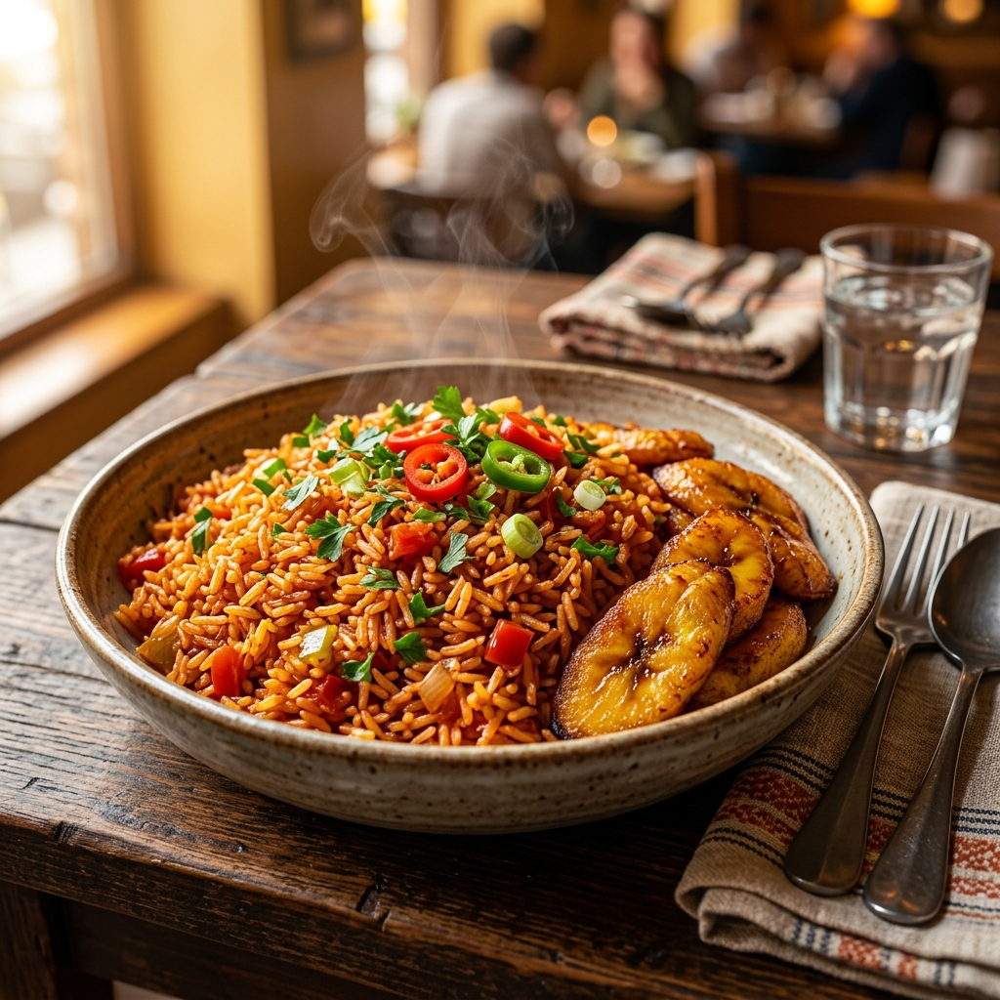

🇫🇳 Nigerian Jollof Rice
The crown jewel of West African cuisine — smoky, deeply spiced,
and vividly red. Made in one pot and loved at every table,
party, and celebration across Nigeria.
Cuisine: Nigerian | Category: Main Course |
Difficulty: Medium

Nigerian Jollof Rice served with fried plantains — a classic pairing.
⏱ Recipe Details
| Detail |
Value |
| Prep Time |
20 minutes |
| Cook Time |
50 minutes |
| Total Time |
1 hour 10 minutes |
| Servings |
6 people |
| Difficulty |
Medium |
| Cuisine |
Nigerian / West African |
🛒 Ingredients
For 6 servings — scale up for a larger party!
Base
- 3 cups long-grain parboiled rice
- 6 medium plum tomatoes, roughly chopped
- 3 red bell peppers (tatashe), chopped
- 2–3 Scotch bonnet peppers (adjust to taste)
- 1 large white onion, halved
- 4 tablespoons tomato paste
Aromatics & Seasoning
- ⅓ cup vegetable or sunflower oil
- 2 Knorr / Maggi stock cubes
- 1 teaspoon curry powder
- 1 teaspoon dried thyme
- 1 teaspoon smoked paprika
- 2 bay leaves
- Salt and black pepper, to taste
Liquid
- 2 cups chicken or vegetable stock (warm)
Garnish
- Fresh parsley, roughly chopped
- Sliced red chillies
👨🍳 Instructions
-
Blend the pepper base.
Add the plum tomatoes, bell peppers, Scotch bonnet peppers, and half the onion
to a blender. Blend until completely smooth. Set aside.
-
Fry down the tomato base.
Heat the oil in a large, heavy-bottomed pot over medium-high heat. Dice the
remaining onion half and sauté until translucent (~3 mins), then add
the tomato paste and stir-fry for 2 minutes until it darkens
slightly. Pour in the blended pepper mixture. Cook uncovered, stirring
occasionally, for 25–30 minutes until the raw smell disappears
and the oil floats to the top.
-
Season the stew.
Add the stock cubes, curry powder, dried thyme, smoked paprika, bay leaves,
salt, and pepper. Stir well and taste — the base should be
boldly seasoned since it will be cooking the rice.
-
Add the rice.
Wash the parboiled rice under cold water until the water runs clear.
Stir the rice into the tomato stew, then pour in the warm stock.
The liquid level should just barely cover the rice.
-
Steam to perfection.
Bring to a boil, then reduce the heat to the lowest setting.
Cover the pot tightly with foil first, then place the lid on top to trap steam.
Cook for 30 minutes without lifting the lid.
-
Check & finish.
Lift the lid — the rice should be cooked through and fluffy. If any liquid
remains, cook uncovered for a further 3–5 minutes. For the
signature smoky “party jollof” flavour, raise the heat to
high for the last 2 minutes to lightly char the bottom of the rice.
-
Serve & garnish.
Fluff the rice gently and discard the bay leaves. Serve hot, garnished with
fresh parsley and sliced chillies. Pairs beautifully with fried plantains,
grilled chicken, or Nigerian coleslaw.
💡 Tips & Notes
-
🔥 The party jollof secret:
The famous smoky bottom (called “party jollof”) comes from a
brief high-heat finish at the end — don’t skip it!
-
🍅 Fry the tomato base long enough.
Under-fried pepper base is the number one reason Jollof Rice tastes sour.
Cook until the oil fully separates from the stew.
-
💧 Less liquid is more.
Always err on the side of less stock — you can add more, but
you cannot remove it. Too much water results in mushy rice.
-
🍚 Use parboiled rice.
Long-grain parboiled rice holds up better in the tomato stew and gives
firmer, separate grains.
-
♻️ Leftovers taste even better.
Like most stewed rice dishes, Nigerian Jollof tastes richer the next day.
Refrigerate for up to 3 days.
📊 Nutrition Facts
Per serving (approx. 300 g) — values are estimates only.
| Nutrient |
Amount per Serving |
| Calories |
385 kcal |
| Carbohydrates |
62 g |
| Protein |
7 g |
| Total Fat |
12 g |
| Saturated Fat |
2 g |
| Dietary Fibre |
3 g |
| Sodium |
540 mg |
| Vitamin C |
48 mg (53% DV) |
| Iron |
2.1 mg (12% DV) |
* Percent Daily Values are based on a 2,000 calorie diet.
Nutrition information is approximate and will vary depending on
ingredient brands and exact quantities used.
{kind=link}